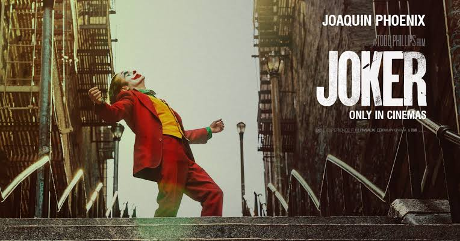

5. Joker (2019)
Description
Joker is a 2019 American psychological thriller film directed by Todd Phillips from a screenplay he co-wrote with Scott Silver. Based on DC Comics characters, it stars Joaquin Phoenix and provides an alternative origin story for the Joker. The film follows Arthur Fleck, a mentally ill party clown and aspiring stand-up comedian whose descent into moral nihilism inspires a violent countercultural revolution against the wealthy in a decaying Gotham City. Robert De Niro, Zazie Beetz, and Frances Conroy appear in supporting roles.
My Opinion
Joker is a visually striking and intensely acted film, elevated by Joaquin Phoenix’s powerful performance. Many critics praised its cinematography, score, and character study of a troubled man descending into chaos. However, some felt the film relied too heavily on familiar influences and raised concerns about its portrayal of violence. Overall, critics generally viewed Joker as a bold and compelling, though controversial, psychological drama.
Poster
